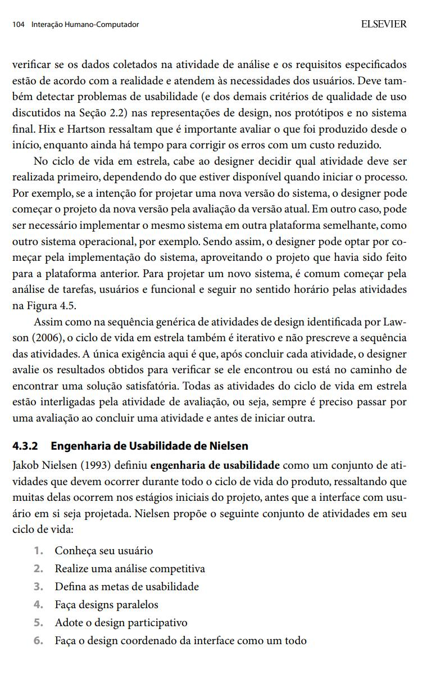
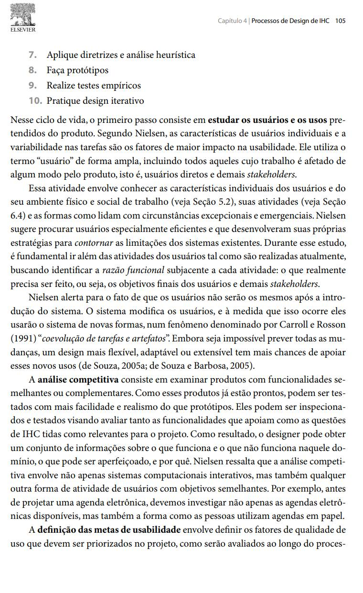

5. Processo de design
Autor: Victor Andreozzi de La Rocque Couto · Revisor: Felipe Lopes Pedroza
Entrega: 1, Planejamento do Projeto (parte individual, feita em 27/11/2026 a partir dos artefatos que Victor elaborou em agosto e setembro de 2026) · Funcionalidade de Victor no projeto: Avaliação de Disciplinas
Outros artefatos desta parte: 1. Planejamento do projeto · 2. Equipe · 3. Heatmap de disponibilidade · 4. Ferramentas do projeto · 6. Sites avaliados e site selecionado · 7. Cronograma das atividades · 8. Verificação com as listas
1. Engenharia de Usabilidade de Nielsen
O grupo adotou a Engenharia de Usabilidade de Nielsen como processo de design (Entrega 1). Nielsen a define como “um conjunto de atividades que devem ocorrer durante todo o ciclo de vida do produto” e propõe dez atividades (Barbosa e Silva, 2010, p. 104). A Figura 3 mostra o trecho do livro.

Fonte: BARBOSA, S. D. J.; SILVA, B. S. Interação Humano-Computador. Rio de Janeiro: Elsevier, 2010. Página: 104, Capítulo 4, Processos de Design de IHC, Seção 4.3.2 Engenharia de Usabilidade de Nielsen.
2. Atividades do processo nas entregas
A Tabela 9 liga cada atividade às entregas do projeto e aos artefatos de Victor. Ela mostra que o processo escolhido na Entrega 1 foi o que o projeto seguiu até a Entrega 8.
| Atividade (Barbosa e Silva, 2010, p. 104 e 105) | Entrega | Artefato de Victor |
|---|---|---|
| 1. Conheça seu usuário | Entrega 2 | Persona Talita, Cenário 6 e análise das tarefas TAR-09 e TAR-10 (personas, cenários, tarefas) |
| 2. Realize uma análise competitiva | Entrega 1 | Avaliação heurística dos sites candidatos (6. Sites avaliados e site selecionado) |
| 3. Defina as metas de usabilidade | Entrega 3 | Metas de usabilidade do grupo, revisadas por Victor |
| 4. Faça designs paralelos | Entregas 4 a 7 | Cada integrante projetou uma funcionalidade; a de Victor é a Avaliação de Disciplinas (storyboard planejado) |
| 5. Adote o design participativo | Entregas 5 e 6 | Storyboard e protótipo de papel avaliados com estudantes (storyboard, protótipo de papel) |
| 6. Faça o design coordenado da interface como um todo | Entrega 3 | Guia de estilo do grupo |
| 7. Aplique diretrizes e análise heurística | Entregas 1, 3 e 8 | Heurísticas de Nielsen nos sites (6. Sites avaliados e site selecionado) e inspeção dos artefatos de Matheus (PDF) |
| 8. Faça protótipos | Entregas 6 e 7 | Protótipo de alta fidelidade da Avaliação de Disciplinas |
| 9. Realize testes empíricos | Entrega 7 | Relato do teste com usuários |
| 10. Pratique design iterativo | Entregas 6 a 8 | Ajustes do protótipo depois de cada avaliação e correções depois da inspeção da Entrega 8 |
Fonte: Victor Andreozzi de La Rocque Couto (2026).
3. Análise competitiva e a escolha do site
A análise competitiva “consiste em examinar produtos com funcionalidades semelhantes ou complementares” que, por já estarem prontos, “podem ser inspecionados e testados” (Barbosa e Silva, 2010, p. 105). É a atividade que liga o processo à escolha do site: Victor inspecionou os sites candidatos antes de confirmar o NoFluxo UnB (página 6). A Figura 4 mostra o trecho.

Fonte: BARBOSA, S. D. J.; SILVA, B. S. Interação Humano-Computador. Rio de Janeiro: Elsevier, 2010. Página: 105, Capítulo 4, Processos de Design de IHC, Seção 4.3.2 Engenharia de Usabilidade de Nielsen.
4. Referências
- BARBOSA, Simone Diniz Junqueira; SILVA, Bruno Santana da. Interação Humano-Computador. Rio de Janeiro: Elsevier, 2010.
- GRUPO 02. Entrega 1: Planejamento do Projeto (documento do grupo, versões 1.0 a 1.3). Universidade de Brasília, 2026. Disponível em: <https://interacao-humano-computador.github.io/2026.2-Grupo02/entrega1.html>.
Histórico de versão
| Versão | Data | Descrição | Autor(es) | Revisor(es) | Declaração de ferramenta de IA |
|---|---|---|---|---|---|
| 1.0 | 27/11/2026 | Parte individual da Entrega 1: processo de design (Engenharia de Usabilidade de Nielsen) ligado às entregas e aos artefatos de Victor, com fotos do livro | Victor Andreozzi de La Rocque Couto | Felipe Lopes Pedroza | Claude (Anthropic): organização das páginas, redação das tabelas a partir dos artefatos de Victor na Entrega 1 (equipe, heatmap e cronograma), levantamento das datas no histórico do repositório e captura das telas dos sites; a escolha dos critérios, as notas e as conclusões são do autor |